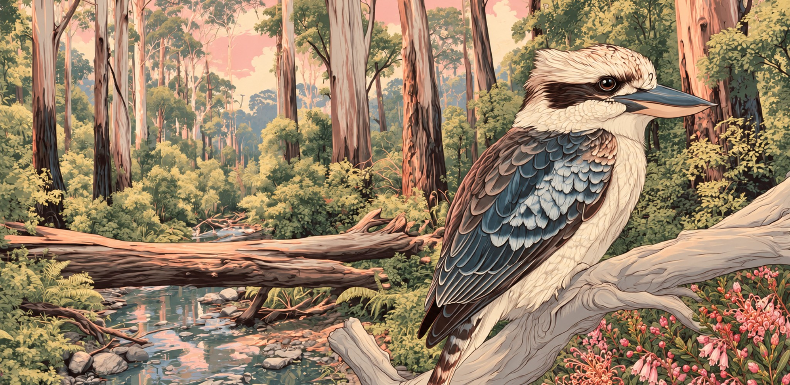

Day
Night
Trappefest VII · Identity
The Riverbend, New Year's Eve 2026
Seventh edition identity: a framed park-print poster built around the kookaburra illustration, set in Ultra and Archivo Narrow with the tent mark, in the pastels of the art. Shown below across the poster, home-page card, year page, emblem, shirt badge, and palette.
01 · Poster, 2:3

02 · Home-page card, 2048×1000

03 · Year page header
The Riverbend
New Year's Eve
New Year's Eve
Third year at the bend. Camping, fires, speakers, games, and the creek to wake up in.
Line-upMixesGallery
04 · Emblem
Trappefest VII
The Riverbend
05 · Palette & type
#f6ede4 · Cream
#f8e4dc · Blush
#f2b7a8 · Sky pink
#e58aa0 · Heath
#b9cfd6 · Creek
#c9d3a8 · Sage
#7a3349 · Rose ink
#3b2a22 · Bark ink
Ultra
Wordmark, headlines
Archivo Narrow
Labels, body, dates
06 · Circular shirt badge
Badge artwork
Front · chest, cream shirt
Back · heath pink shirt
Back · creek blue shirt